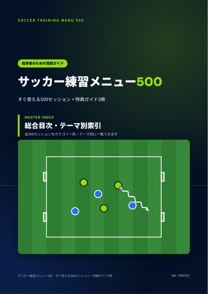
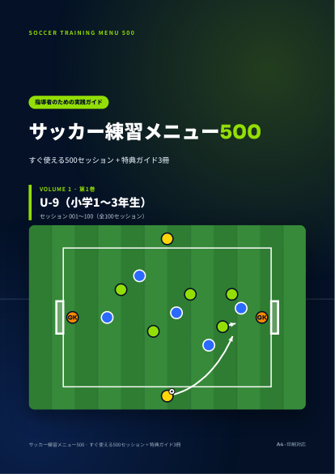
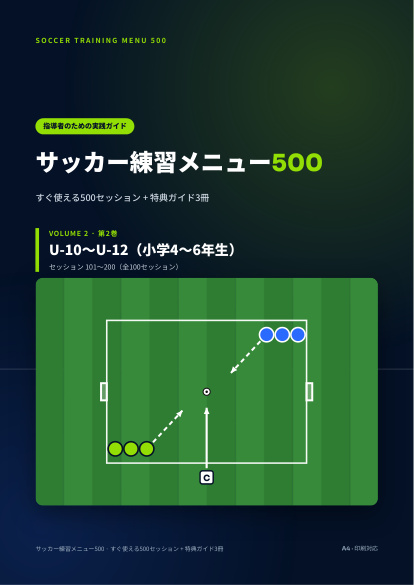
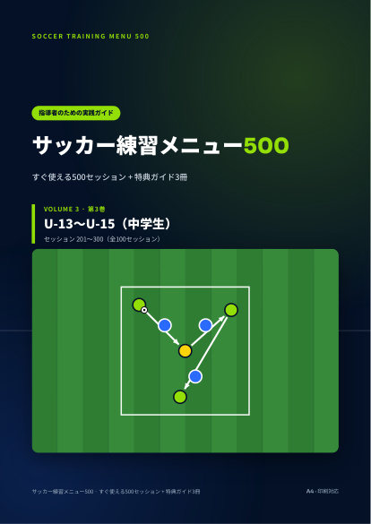
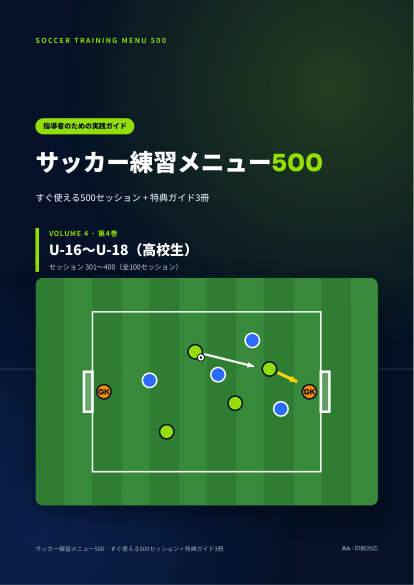
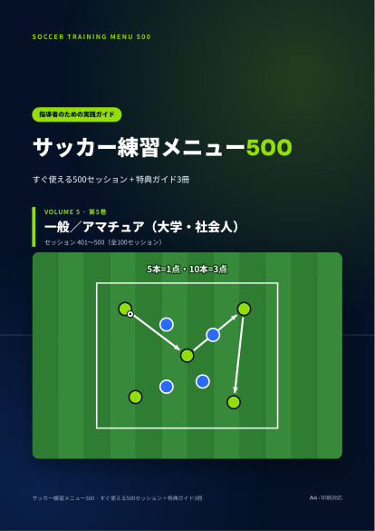
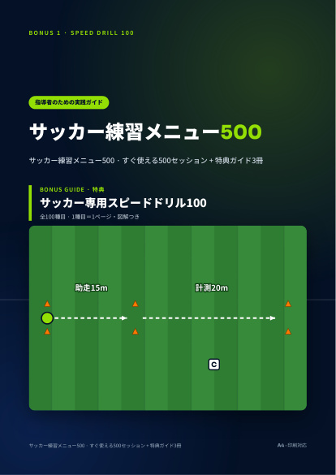
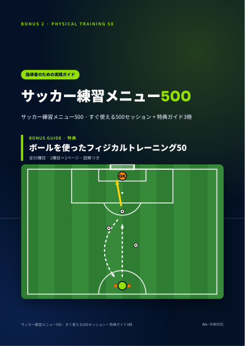
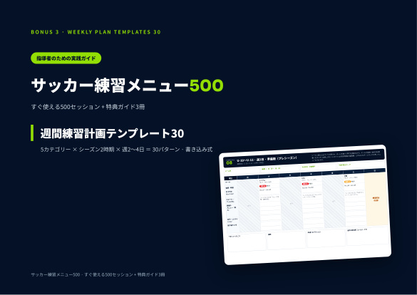

ご利用方法
- まず「総合目次」で、指導しているカテゴリーとテーマを確認します。
- 該当する巻をダウンロードし、使うページを印刷してグラウンドへ。
- 特典の週間計画テンプレートに、セッション番号を書き込んで1週間を組み立てます。
※ スマートフォンでは、ダウンロード後に「ファイル」アプリやPDFビューアで開いてください。このページをブックマークしておくと、いつでも再ダウンロードできます。
メイン教材 サッカー練習メニュー500（全5巻 + 総合目次）

総合目次・テーマ別索引
全500セッションをカテゴリー別・テーマ別に一覧。まずはここから。
ダウンロード
第1巻 U-9（小学1〜3年生）
セッション001〜100 · 8人制中心
ダウンロード
第2巻 U-10〜U-12（小学4〜6年生）
セッション101〜200 · 8人制中心
ダウンロード
第3巻 U-13〜U-15（中学生）
セッション201〜300 · 11人制
ダウンロード
第4巻 U-16〜U-18（高校生）
セッション301〜400 · 11人制
ダウンロード
第5巻 一般／アマチュア
セッション401〜500 · 11人制
ダウンロード特典ガイド3冊

特典1 サッカー専用スピードドリル100
反応・加速・方向転換・ボールありスピード 全100種目
ダウンロード
特典2 ボールを使ったフィジカルトレーニング50
持久力・パワー・体幹・アジリティ 全50種目
ダウンロード
特典3 週間練習計画テンプレート30（印刷用）
5カテゴリー × 2時期 × 週2〜4日 書き込み式
ダウンロード特典3 週間練習計画テンプレート30（編集版）
ブラウザで開いて直接入力・印刷できます。入力内容はお使いのブラウザに保存されます。
開く次のステップ
- 今週の練習日数とシーズン時期に合う「週間練習計画テンプレート」を1枚選ぶ。
- 総合目次から今週のテーマに合うセッションを2〜3個選び、番号を書き込む。
- メインの前にスピードドリルかフィジカルトレーニングを1種目加えて、練習スタート。